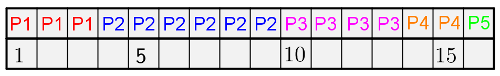
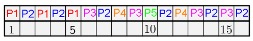
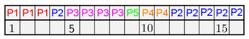
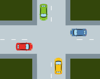
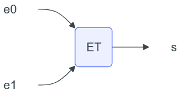
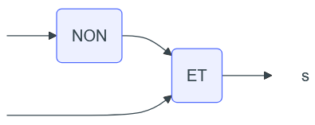
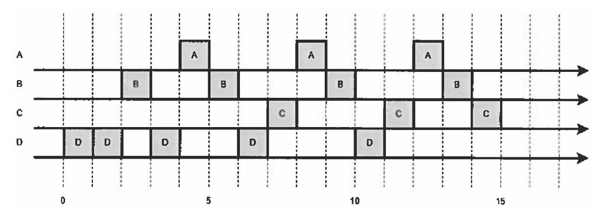

Exercices
Exercice 1
On rappelle ici la liste des processus (ainsi que leur date d'arrivée) de l'exemple du cours :
| Processus | P1 | P2 | P3 | P4 | P5 |
|---|---|---|---|---|---|
| Durée en quantum | |||||
| Date d'arrivée |
On donne ci-dessous les schémas d'ordonnancement pour les modèles FIFO, Round Robin (RR) et SRT :
Modèle FIFO : \(~~~~~~~~\)

Modèle RR : \(~~~~~~~~~~\)

Modèle SRT : \(~~~~~~~~\)

- Vérifier que ces 3 schémas correspondent bien aux différents modèles.
- Pour chaque modèle, déterminer le temps moyen d'exécution et le temps moyen d'attente.
- Quel est celui qui est préférable pour traiter ces processus ?
Exercice 2
On considère 3 processus P1, P2 et P3 et 3 ressources R1, R2 et R3 tels que :
- P1 : demande R1, demande R2, libère R1, libère R2.
- P2 : demande R2, demande R3, libère R2, libère R3.
- P3 : demande R3, demande R1, libère R3, libère R1.
- Si les processus sont exécutés l’un après l’autre, d’abord P1 puis P2 et enfin P3, y-a-t-il interblocage ?
- Décrire une exécution des 3 processus qui conduit à une situation d’interblocage.
Exercice 3
On considère la situation suivante dans laquelle 4 voitures sont bloquées à une intersection :

Montrer qu'il s'agit d'un interblocage, c'est-à-dire que les quatre conditions de Coffman sont réunies. On indiquera précisément quelles sont les ressources et les processus dans cette situation. On fera également l'hypothèse que les conducteurs sont raisonnables, c'est-à-dire qu'ils ne veulent pas provoquer d'accident !
Exercice 4
D'après 2021, Métropole, Candidats Libres, J2, Ex. 2
Les états possibles d'un processus sont : prêt, élu, terminé et bloqué.
- Expliquer à quoi correspond l'état élu.
- Proposer un schéma illustrant les passages entre les différents états.
- On suppose que quatre processus C1, C2, C3 et C4 sont créés sur un ordinateur, et qu'aucun autre processus n'est lancé sur celui-ci, ni préalablement ni pendant l'exécution des quatre processus. L'ordonnanceur, pour exécuter les différents processus prêts, les place dans une structure de données de type file. Un processus prêt est enfilé et un processus élu est défilé. Parmi les propositions suivantes, recopier celle qui décrit le fonctionnement des entrées/sorties dans une file :
- Premier entré, dernier sorti
- Premier entré, premier sorti
- Dernier entré, premier sorti
- On suppose que les quatre processus arrivent dans la file et y sont placés dans l'ordre C1, C2, C3 et C4 . Les temps d'exécution totaux de C1, C2, C3 et C4 sont respectivement 100 ms, 190 ms, 80 ms et 60 ms.
- Après 40 ms d'exécution, le processus C1 demande une opération d'écriture disque, opération qui dure 200 ms. Pendant cette opération d'écriture, le processus C1 passe à l'état bloqué.
- Après 20 ms d'exécution, le processus C3 demande une opération d'écriture disque, opération qui dure 10 ms. Pendant cette opération d'écriture, le processus C3 passe à l'état bloqué.
Faire une frise chronologique et y indiquer les états de tous les processus.
- Ci-dessous deux programmes en pseudo-code sont présentés. Verrouiller un fichier signifie que le programme demande un accès exclusif au fichier et l'obtient si le fichier est disponible.
| Programme 1 | Programme 2 |
|---|---|
| Verrouiller fichier_1 | Verrouiller fichier_2 |
| Calculs sur fichier_1 | Verrouiller fichier_1 |
| Verrouiller fichier_2 | Calculs sur fichier_1 |
| Calculs sur fichier_1 | Calculs sur fichier_2 |
| Calculs sur fichier_2 | Déverrouiller fichier_1 |
| Calculs sur fichier_1 | Déverrouiller fichier_2 |
| Déverrouiller fichier_2 | |
| Déverrouiller fichier_1 |
En supposant que les processus correspondant à ces programmes s'exécutent simultanément (exécution concurrente), expliquer le problème qui peut être rencontré.
- Proposer une modification du programme 2 permettant d'éviter ce problème.
Exercice 5
D'après 2022, Polynésie, J1, Ex. 2, modifié
Un système est composé de 4 périphériques, numérotés de 0 à 3, et d'une mémoire, reliés entre eux par un bus auquel est également connecté un dispositif ordonnanceur. À l'aide d'un signal spécifique envoyé sur le bus, l'ordonnanceur sollicite à tour de rôle les périphériques pour qu'ils indiquent le type d'opération (lecture ou écriture) qu'ils souhaitent effectuer, et l'adresse mémoire concernée. Un tour a lieu quand les 4 périphériques ont été sollicités. Au début d'un nouveau tour, on considère que toutes les adresses sont disponibles en lecture et écriture.
- Si un périphérique demande l'écriture à une adresse mémoire à laquelle on n'a pas encore accédé pendant le tour, l'ordonnanceur répond "OK" et l'écriture a lieu. Si on a déjà demandé la lecture ou l'écriture à cette adresse, l'ordonnanceur répond "ATT" et l'opération n'a pas lieu.
- Si un périphérique demande la lecture à une adresse à laquelle on n'a pas encore accédé en écriture pendant le tour, l'ordonnanceur répond "OK" et la lecture a lieu. Plusieurs lectures peuvent avoir donc lieu pendant le même tour à la même adresse.
- Si un périphérique demande la lecture à une adresse à laquelle on a déjà accédé en écriture, l'ordonnanceur répond "ATT" et la lecture n'a pas lieu. Ainsi, pendant un tour, une adresse peut être utilisée soit une seule fois en écriture, soit autant de fois qu'on veut en lecture, soit pas utilisée.
- Si un périphérique ne peut pas effectuer une opération à une adresse, il demande la même opération à la même adresse au tour suivant.
- Le tableau donné en annexe 1 indique, sur chaque ligne, le périphérique sélectionné, l'adresse à laquelle il souhaite accéder et l'opération à effectuer sur cette adresse. Compléter dans la dernière colonne de cette annexe, à rendre avec la copie, la réponse donnée par l'ordonnanceur pour chaque opération.
Annexe 1
| N° périphérique | Adresse | Opération | Réponse de l'ordonnanceur |
|---|---|---|---|
| 0 | 10 | écriture | "OK" |
| 1 | 11 | lecture | "OK" |
| 2 | 10 | lecture | "ATT" |
| 3 | 10 | écriture | "ATT" |
| 0 | 12 | lecture | |
| 1 | 10 | lecture | |
| 2 | 10 | lecture | |
| 3 | 10 | écriture |
On suppose dans toute la suite que :
- le périphérique 0 écrit systématiquement à l'adresse 10 ;
- le périphérique 1 lit systématiquement à l'adresse 10 ;
- le périphérique 2 écrit alternativement aux adresses 11 et 12 ;
- le périphérique 3 lit alternativement aux adresses 11 et 12.
Pour les périphériques 2 et 3, le changement d'adresse n'est effectif que lorsque l'opération est réalisée.
- On suppose que les périphériques sont sélectionnés à chaque tour dans l'ordre 0 ; 1 ; 2 ; 3. Expliquer ce qu'il se passe pour le périphérique 1.
Les périphériques sont sollicités de la manière suivante lors de quatre tours successifs :
- au premier tour, ils sont sollicités dans l'ordre 0 ; 1 ; 2 ; 3 ;
- au deuxième tour, dans l'ordre 1 ; 2 ; 3 ; 0 ;
- au troisième tour, 2 ; 3 ; 0 ; 1 ;
- puis 3 ; 0 ; 1 ; 2 au dernier tour.
- Et on recommence...
- Préciser pour chacun de ces tours si le périphérique 0 peut écrire et si le périphérique 1 peut lire.
- En déduire la proportion des valeurs écrites par le périphérique 0 qui sont effectivement lues par le périphérique 1.
On change la méthode d'ordonnancement : on détermine l'ordre des périphériques au cours d'un tour à l'aide de deux listes d'attente ATT_L et ATT_E établies au tour précédent. Au cours d'un tour, on place dans la liste ATT_L toutes les opérations de lecture mises en attente, et dans la liste d'attente ATT_E toutes les opérations d'écriture mises en attente. Au début du tour suivant, on établit l'ordre d'interrogation des périphériques en procédant ainsi :
- on interroge ceux présents dans la liste ATT_L, par ordre croissant d'adresse ;
- on interroge ensuite ceux présents dans la liste ATT_E, par ordre croissant d'adresse ;
- puis on interroge les périphériques restants, par ordre croissant d'adresse.
- Compléter et rendre avec la copie le tableau fourni en annexe 2, en utilisant l'ordonnancement décrit ci-dessus, sur 3 tours.
Annexe 2
| Tour | N° périphérique | Adresse | Opération | Réponse ordonnanceur | ATT_L | ATT_E |
|---|---|---|---|---|---|---|
| 1 | 0 | 10 | écriture | "OK" | vide | vide |
| 1 | 1 | 10 | lecture | "ATT" | (1, 10) | vide |
| 1 | 2 | 11 | écriture | |||
| 1 | 3 | 11 | lecture | |||
| 2 | 1 | 10 | lecture | vide | ||
| 2 | ||||||
| 2 | ||||||
| 2 | ||||||
| 3 | 0 | 10 | écriture | vide | vide | |
| 3 | 1 | 10 | lecture | vide | ||
| 3 | 2 | 11 | écriture | "OK" | (1, 10) | vide |
| 3 | 3 | 12 | lecture |
Les colonnes e0 et e1 du tableau suivant recensent les deux chiffres de l'écriture binaire de l'entier n de la première colonne.
| nombre n | écriture binaire de n sur deux bits | e1 | e0 |
|---|---|---|---|
| 0 | 00 | 0 | 0 |
| 1 | 01 | 0 | 1 |
| 2 | 10 | 1 | 0 |
| 3 | 11 | 1 | 1 |
L'ordonnanceur attribue à deux signaux sur le bus de données les valeurs de e0 et e1 associées au numéro du circuit qu'il veut sélectionner. On souhaite construire à l'aide des portes ET, OU et NON un circuit pour chaque périphérique. Chacun des quatre circuits à construire prend en entrée deux signaux e0 et e1, le signal de sortie s valant 1 uniquement lorsque les niveaux de e0 et e1 correspondent aux bits de l'écriture en binaire du numéro du périphérique correspondant.
Par exemple, le circuit ci-dessous réalise la sélection du périphérique 3. En effet, le signal s vaut 1 si et seulement si e0 et e1 valent tous les deux 1.

- Recopier sur la copie et indiquer dans le circuit ci-dessous les entrées e0 et e1 de façon que ce circuit sélectionne le périphérique 1.

- Dessiner un circuit constitué d'une porte ET et d'une porte NON, qui sélectionne le périphérique 2.
- Dessiner un circuit permettant de sélectionner le périphérique 0.
Exercice 6
D'après 2024, Amérique du Nord, J1, Ex. 1
Nous étudions quatre processus A, B, C et D qui utilisent des ressources suivantes :
- un fichier commun aux processus ;
- le clavier de l’ordinateur ;
- le processeur graphique (GPU) ;
- le port 25000 de la connexion Internet.
Voici le détail de ce que fait chaque processus :
| A | B | C | D |
|---|---|---|---|
| acquérir le GPU | acquérir le clavier | acquérir le port | acquérir le fichier |
| faire des calculs | acquérir le fichier | faire des calculs | faire des calculs |
| libérer le GPU | libérer le clavier | libérer le port | acquérir le clavier |
| libérer le fichier | libérer le clavier | ||
| libérer le fichier |
On a le chronogramme suivant :

Montrer que l’ordre d’exécution donné aboutit à une situation d’interblocage.
Exercice 7
Considérons un petit système embarqué : un petit ordinateur relié à trois LED A, B et C.
Une LED peut être éteinte ou allumée et on peut configurer sa couleur.
On dispose de trois programmes qui affichent des signaux lumineux en faisant clignoter les LED.
Chaque programme possède une LED primaire et une LED secondaire.
- Le programme P1 affiche ses signaux sur A (primaire) et B (secondaire) en vert.
- Le programme P2 affiche ses signaux sur B (primaire) et C (secondaire) en orange.
- Enfin, le programme P3 affiche ses signaux sur C (primaire) et A (secondaire) en rouge.
Comme les LED ne supportent pas d'être configurées dans deux couleurs en même temps, le système propose deux primitives acquerirLED(nom) et rendreLED(nom) qui permettent respectivement d'acquérir et de relâcher une LED.
Si une LED est déjà acquise, alors acquerirLED() bloque.
On suppose que chacun des trois programmes P1, P2 et P3 effectue les actions suivantes en boucle :
- acquérir sa LED primaire
- acquérir sa LED secondaire
- configurer les couleurs
- émettre des signaux
- rendre la LED secondaire
- rendre le LED primaire
- recommencer en a.
- Ecrire un programme Python simulant le code de cet exercice.
- Constater qu'en exécutant suffisamment de fois le programme, il se bloque.
Indication
Afin de laisser plus de chance au système de changer de contexte, on pourra mettre des affichages juste après l'acquisition d'un verrou. En effet, l'écriture dans la console passe le thread courant en attente, le temps que les écritures soient effectuées, ce qui laisse une opportunité à l'ordonnanceur de choisir un autre thread ou un autre processus.
Aide : un canevas à compléter
On peut utiliser un dictionnaire indicé par les noms des LED pour y stocker les verrous correspondants.
Vous pouvez compléter le programme préparatoire ci-dessous :
##-----Importation des Modules-----##
import threading
verrouLED = {}
for elt in ['A', 'B', 'C']:
verrouLED[elt] = threading.Lock()
def acquerirLED(nom):
pass
def rendreLED(nom):
pass
def prog(n, LEDPrim, LEDSec):
pass
p1 = threading.Thread(target = prog, args = [1, 'A', 'B'])
p2 = threading.Thread(target = prog, args = [2, 'B', 'C'])
p3 = threading.Thread(target = prog, args = [3, 'C', 'A'])
p1.start()
p2.start()
p3.start()